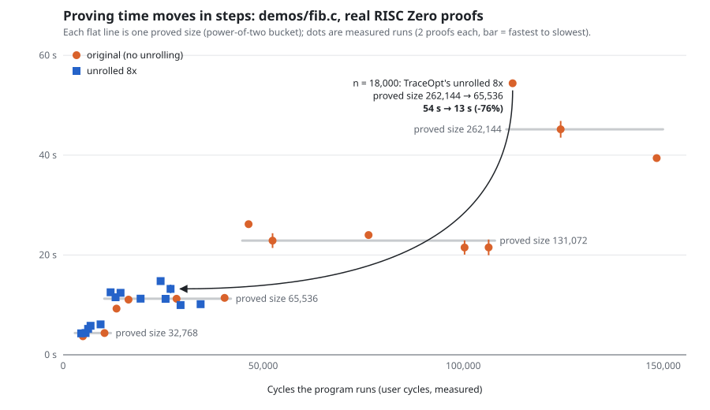
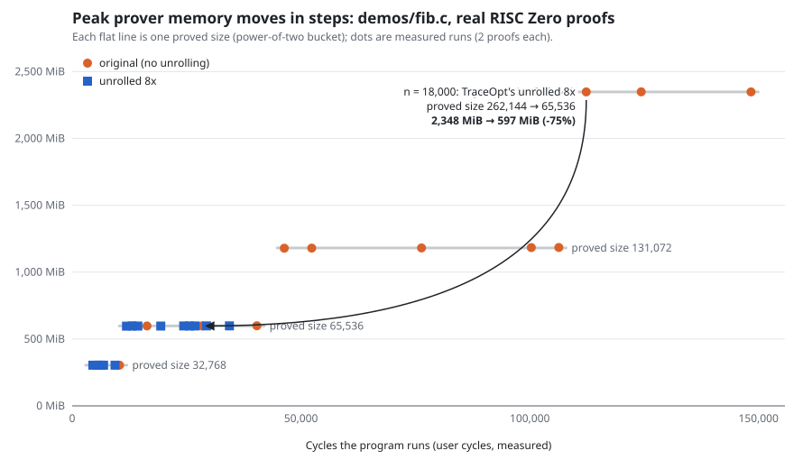

TraceOpt: real proofs
What proving actually costs with the RISC Zero prover, for the original program, the version TraceOpt chooses, and plain Clang builds.
110real proofs generated and verified
41%–76%less proving time where TraceOpt unrolled
49%–75%less prover memory where TraceOpt unrolled
allanswers matched the native program
1. Proving cost moves in steps
Each dot is a real proof. Proving time and memory stay flat inside one proved size (a power of two) and jump at its edge. TraceOpt predicts which step a version lands on before running anything.


2. Original vs TraceOpt vs Clang, per program
Bars: median proving time (the line spans the fastest and slowest proof) and peak memory. Grey is the original, green TraceOpt's choice, blue plain Clang. Percentages are against the original.
demos/array_sum.c 12000 (3 proofs per version)
Proving time
Peak memory
demos/counter.c 1000 3 (3 proofs per version)
Proving time
Peak memory
demos/fib.c 20000 (3 proofs per version)
Proving time
Peak memory
strided_rw 5 (3 proofs per version)
Proving time
Peak memory
3. All measurements
| Program | Version | Proved size | Segments | Proving time | Change | Peak memory | Proof size | Correct? |
|---|---|---|---|---|---|---|---|---|
demos/array_sum.c 12000 | original (no unrolling) | 262,144 | 1 | 43.1 s | 2,349 MiB | 255,656 B | yes | |
| unrolled 8x (TraceOpt) | 131,072 | 1 | 22.1 s | -49% | 1,182 MiB | 243,944 B | yes | |
| clang-O2 | 262,144 | 1 | 41.5 s | -4% | 2,349 MiB | 255,656 B | yes | |
| clang-O3 | 262,144 | 1 | 41.5 s | -4% | 2,349 MiB | 255,656 B | yes | |
demos/counter.c 1000 3 | original (no unrolling) | 65,536 | 1 | 10.4 s | 597 MiB | 220,904 B | yes | |
| unrolled 8x (TraceOpt) | 32,768 | 1 | 6.1 s | -41% | 304 MiB | 209,256 B | yes | |
| clang-O2 | 65,536 | 1 | 12.1 s | +17% | 597 MiB | 220,904 B | yes | |
| clang-O3 | 65,536 | 1 | 11.7 s | +13% | 597 MiB | 220,904 B | yes | |
demos/fib.c 20000 | original (no unrolling) | 262,144 | 1 | 63.8 s | 2,349 MiB | 255,656 B | yes | |
| unrolled 8x (TraceOpt) | 65,536 | 1 | 15.0 s | -76% | 598 MiB | 220,904 B | yes | |
| clang-O2 | 262,144 | 1 | 64.3 s | +1% | 2,349 MiB | 255,656 B | yes | |
| clang-O3 | 262,144 | 1 | 68.7 s | +8% | 2,349 MiB | 255,656 B | yes | |
strided_rw 5 | original (no unrolling) | 262,144 | 1 | 41.5 s | 2,348 MiB | 255,656 B | yes | |
| unrolled 4x (TraceOpt) | 131,072 | 1 | 20.3 s | -51% | 1,186 MiB | 243,944 B | yes | |
| clang-O2 | 262,144 | 1 | 41.5 s | 0% | 2,347 MiB | 255,656 B | yes | |
| clang-O3 | 262,144 | 1 | 40.7 s | -2% | 2,348 MiB | 255,656 B | yes |
4. The compressed proof has a fixed size
A succinct receipt compresses all segment proofs into one. Its size is the same for every program, so no compiler can shrink it; TraceOpt still makes it cheaper to generate.
| Program | Version | Proved size | Segments | Proving time | Change | Peak memory | Proof size | Correct? |
|---|---|---|---|---|---|---|---|---|
demos/fib.c 20000 | original (no unrolling) | 262,144 | 1 | 67.7 s | 2,349 MiB | 222,668 B | yes | |
| unrolled 8x (TraceOpt) | 65,536 | 1 | 28.3 s | -58% | 1,419 MiB | 222,668 B | yes |
5. Limits
- Runs with segments of at most 2^18 cycles only: larger ones did not fit in the development machine's memory (about 7.6 GB in WSL).
- Proving times vary by up to about 75% between runs on this laptop; versions are proved alternately and the median is shown. Memory does not vary.
- One machine, the CPU prover, a few small programs.
- These programs are cases where TraceOpt chose to unroll. In the executor evaluation (
results/evaluation-clang21.json) plainclang -O2did better than TraceOpt in 1 of 16 cases (nested_fnv, n = 3000: 262,144 against 524,288 cycles); that case is not proved here.
Reproduce
scripts/prove_compare.sh demos/fib.c 20000 --conventional O2 O3
scripts/prove_staircase.sh demos/fib.c --n 1000 8000 18000
python3 scripts/make_proving_report.py